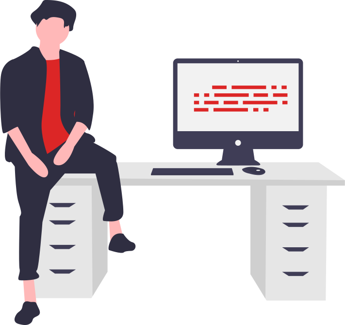

Creating a component library for my future projects with neogcamp
@Typography
This is larger heading
This is smaller heading
This is normal text
This is smaller text
Containers
Fluid container
This is a fluid container. Content in this container is always from end to end touching the edges just like in this example, as I am trying to take the line to the end so to do this I am typing that much of thoughts so that it can reach that end so I am writing random stuff
Center container
This is a center container. Content here is always centralised
Lists
Unordered list (without bullets)
Item one
Item two
Item three
Ordered list with reversed numbers
item one
item two
item three
Inline list
Milk
Egg
Butter
@Nav
Brand Name
Home
About
Contact
@Header

Saksham, the web developer
white section
We are an open community of developers building resources for a better Web, regardless of brand, browser,
or platform. Anyone can contribute and each person who does makes us stronger. Together we can continue
to drive innovation on the Web to serve the greater good. It starts here, with you.
Off white section
We are an open community of developers building resources for a better Web, regardless of brand, browser,
or platform. Anyone can contribute and each person who does makes us stronger. Together we can continue
to drive innovation on the Web to serve the greater good. It starts here, with you.